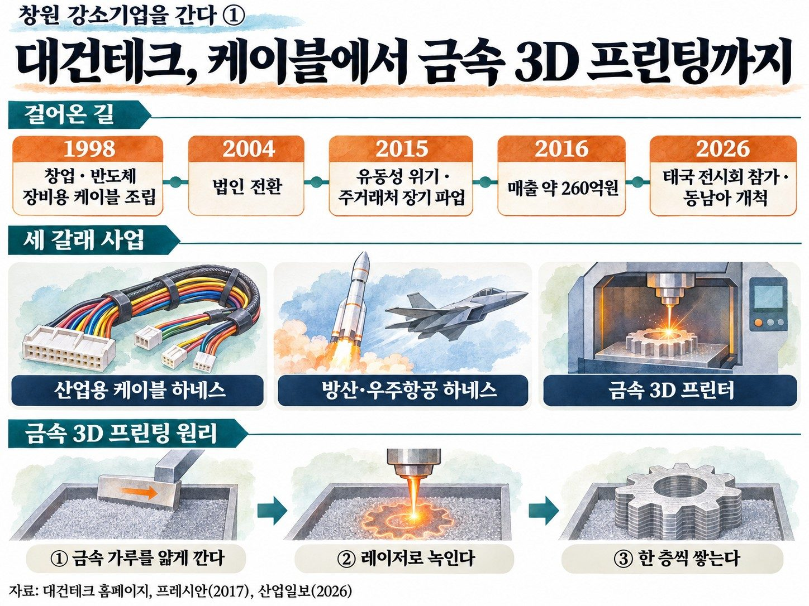

2026년 11월 17일 화요일 지면 › 기획·연재
그래픽 · 창원 강소기업을 간다 ①대건테크가 걸어온 길과 세 갈래 사업

1998년 반도체 장비용 케이블 조립으로 출발한 대건테크는 2015년 위기를 넘긴 뒤 금속 3D 프린터로 사업을 넓혔다. 연표와 사업 구성, 금속 3D 프린팅의 원리를 한 장에 정리했다.
출처
공개 자료 기준
이 호의 다른 기사
- 오늘의 초점웅동1지구 1,009억 '먼저 지급' 놓고 공방…"절차 하자" vs "손실 줄이려"
- 지역 · 경남17일 저녁 비 5㎜ 안팎…수능일 19일 창원 아침 3도
- 지역 · 경남진해신항 배후부지 23~24일 설계심의…1단계 준설 12월 발주 예정
- 지역 · 경남북면 화천리 국민체육센터, 6년 만에 백지화…"암반 섞여 부적합"
- 지역 · 경남경남대 등 4개 기관, 마산 스마트그린산단 '제조 AX' 협약
- 지역 · 경남"태만 신고 2회면 출국" 계절근로 준수사항 논란
- 정치 · 경제한화오션, 하청 교섭 36개 중 '안전 6개'만…개정 노조법 첫 시험대
- 기획·연재케이블 잇던 회사, 금속을 쌓다…대건테크
- 기획·연재11월 17일, 나라 잃은 날을 기억의 날로…삼진의 여덟 사람
- 기획·연재같은 바다, 다른 물살
- 사설창원산단의 허리가 꺾이고 있다